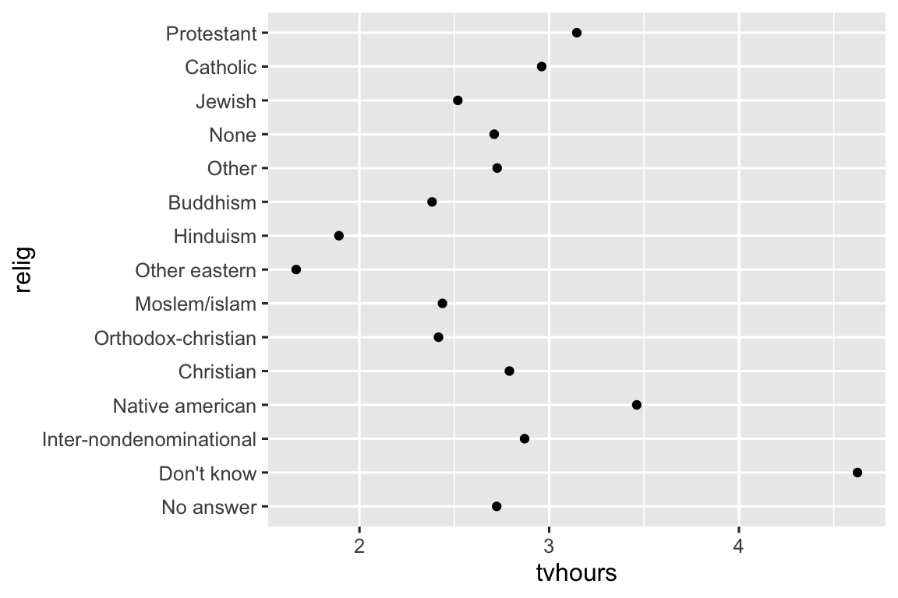
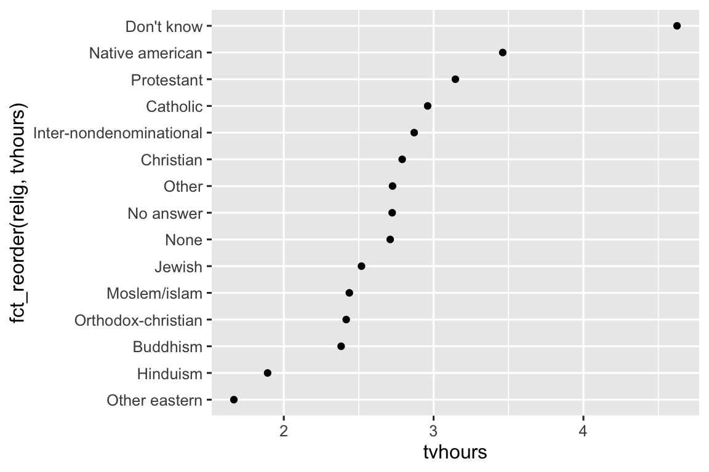
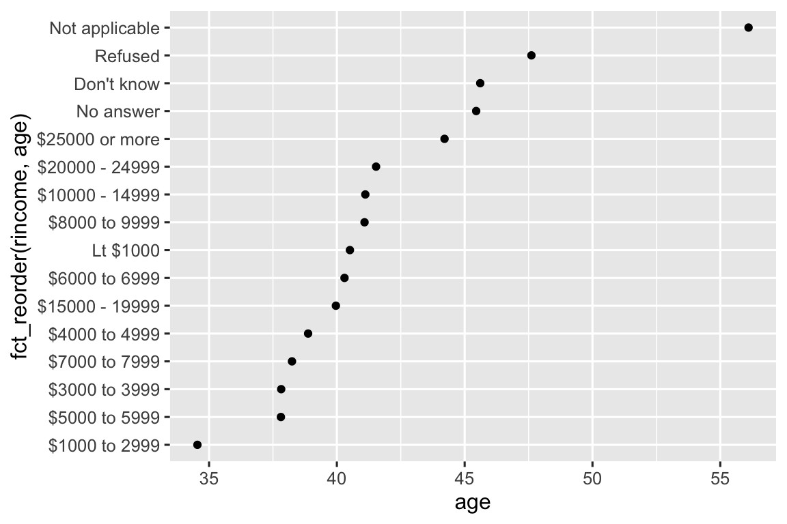
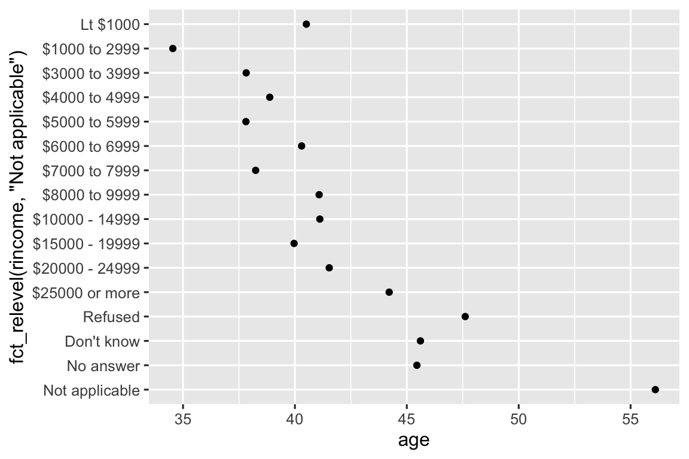
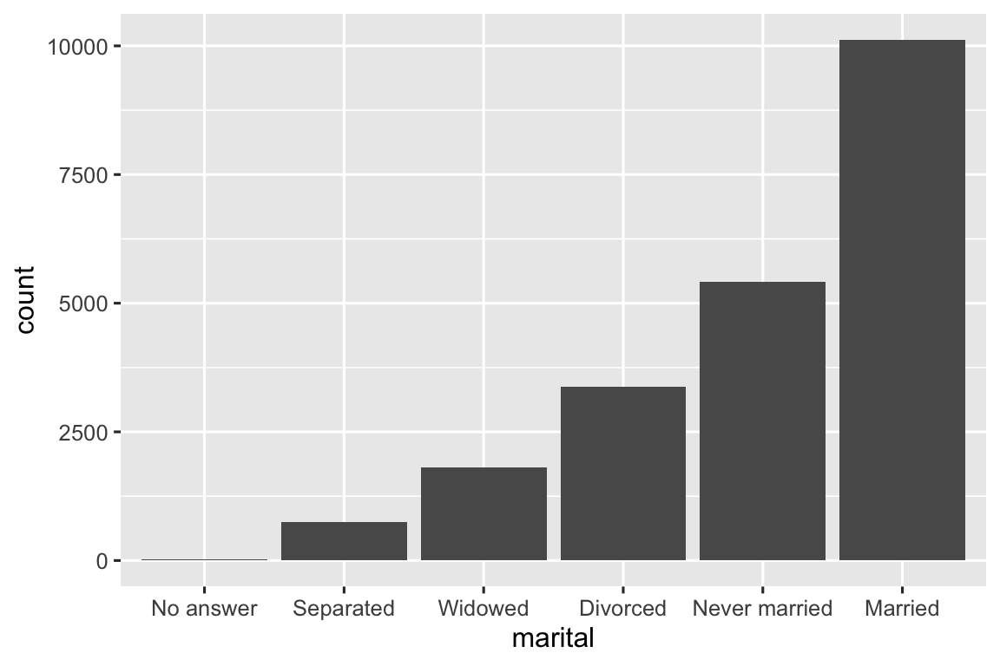

library(tidyverse)16 因子
16.1 引言
因子用于分类变量，这些变量具有一组固定且已知的可能取值。当 你希望以非字母顺序显示字符向量时，它们也很有用。
我们将从解释为什么数据分析需要因子 (factor)1 以及如何使用factor()函数创建它们开始。 接着，我们将向您介绍gss_cat数据集，它包含一系列可供实验的分类变量。 之后，你将使用此数据集练习修改因子的顺序和值，最后我们将讨论有序因子。
16.1.1 必要条件
基础 R 提供了一些用于创建和操作因子的基本工具。我 们将使用 forcats 包来补充这些工具，forcats 是 tidyverse 的一部分，它提供了处理分类变量 (它是 factors 的字母重新排列!) 的工具，并提供了多种与因子一起工作的辅助函数。
16.2 因子基础
假设你有一个记录月份的变量:
x1 <- c("Dec", "Apr", "Jan", "Mar")使用字符串记录这个变量有两个问题:
只有十二个可能的月份，而且没有什么能阻止你出现打字错误：
x2 <- c("Dec", "Apr", "Jam", "Mar")它并没有以有用的方式进行排序：
sort(x1) #> [1] "Apr" "Dec" "Jan" "Mar"
你可以使用因子（factor）来解决这两个问题。要 创建一个因子，首先需要创建一个有效水平 (levels) 的列表：
month_levels <- c(
"Jan", "Feb", "Mar", "Apr", "May", "Jun",
"Jul", "Aug", "Sep", "Oct", "Nov", "Dec"
)现在你可以创建一个因子:
y1 <- factor(x1, levels = month_levels)
y1
#> [1] Dec Apr Jan Mar
#> Levels: Jan Feb Mar Apr May Jun Jul Aug Sep Oct Nov Dec
sort(y1)
#> [1] Jan Mar Apr Dec
#> Levels: Jan Feb Mar Apr May Jun Jul Aug Sep Oct Nov Dec任何不在水平列表中的值都将被静默地转换为NA（缺失值）：
y2 <- factor(x2, levels = month_levels)
y2
#> [1] Dec Apr <NA> Mar
#> Levels: Jan Feb Mar Apr May Jun Jul Aug Sep Oct Nov Dec这似乎有点风险，因此你可能想用forcats::fct()来代替：
y2 <- fct(x2, levels = month_levels)
#> Error in `fct()`:
#> ! All values of `x` must appear in `levels` or `na`
#> ℹ Missing level: "Jam"如果省略了水平，则将按照字母顺序从数据中获取:
factor(x1)
#> [1] Dec Apr Jan Mar
#> Levels: Apr Dec Jan Mar按字母顺序排序稍有风险，因为并非每台计算机都会以相同的方式对字符串进行排序。因 此，forcats::fct()是按照首次出现的顺序进行排序的：
fct(x1)
#> [1] Dec Apr Jan Mar
#> Levels: Dec Apr Jan Mar如果你需要直接访问有效的水平集合，可以使用levels()函数来做到这一点：
levels(y2)
#> [1] "Jan" "Feb" "Mar" "Apr" "May" "Jun" "Jul" "Aug" "Sep" "Oct" "Nov" "Dec"你也可以在使用readr包读取数据时，通过col_factor()来创建一个因子：
csv <- "
month,value
Jan,12
Feb,56
Mar,12"
df <- read_csv(csv, col_types = cols(month = col_factor(month_levels)))
df$month
#> [1] Jan Feb Mar
#> Levels: Jan Feb Mar Apr May Jun Jul Aug Sep Oct Nov Dec16.3 一般社会调查
在本章的剩余部分我们将使用forcats::gss_cat，它是来自一般社会调查 (General Social Survey) 的样本数据。该 调查是由芝加哥大学独立研究机构NORC主导，在美国进行的一项长期调查。这 项调查包含数千个问题，因此在gss_cat中Hadley选择了一些问题来说明你在处理因子时会遇到的一些常见挑战。
gss_cat
#> # A tibble: 21,483 × 9
#> year marital age race rincome partyid
#> <int> <fct> <int> <fct> <fct> <fct>
#> 1 2000 Never married 26 White $8000 to 9999 Ind,near rep
#> 2 2000 Divorced 48 White $8000 to 9999 Not str republican
#> 3 2000 Widowed 67 White Not applicable Independent
#> 4 2000 Never married 39 White Not applicable Ind,near rep
#> 5 2000 Divorced 25 White Not applicable Not str democrat
#> 6 2000 Married 25 White $20000 - 24999 Strong democrat
#> # ℹ 21,477 more rows
#> # ℹ 3 more variables: relig <fct>, denom <fct>, tvhours <int>(记住，由于该数据集是由包提供的，因此可以使用?gss_cat获取有关变量的更多信息)
当因子 (factors) 存储在tibble中时，你不能那么容易地看到它们的水平（levels）。查 看它们的一种方法是使用count()函数。
gss_cat |>
count(race)
#> # A tibble: 3 × 2
#> race n
#> <fct> <int>
#> 1 Other 1959
#> 2 Black 3129
#> 3 White 16395在处理因子时，两种最常见的操作是改变水平的顺序和改变水平的值。这 些操作将在下面的部分中描述。
16.3.1 练习
探索
rincome(申报收入) 的分布。默 认的条形图为什么难以理解？如 何改进该图？这个调查中哪个
relig最常见？哪 个partyid最常见？denom（教派）适用于哪个宗教？你 如何用表格来查找？你 如何用可视化来查找？
16.4 修改因子顺序
在可视化中改变因子水平的顺序通常很有用。例 如，假设你想要探索不同宗教每天平均看电视的小时数：
relig_summary <- gss_cat |>
group_by(relig) |>
summarize(
tvhours = mean(tvhours, na.rm = TRUE),
n = n()
)
ggplot(relig_summary, aes(x = tvhours, y = relig)) +
geom_point()
这个图很难阅读，因为没有整体的模式。我 们可以使用fct_reorder()函数来重新排序relig的水平以改进它。f ct_reorder()接受三个参数：
.f, 要修改水平的因子；.x, 一个用于对水平重新排序的数字向量；- 可选参数，
.fun是一个函数，在.f的每个值对应多个.x值时使用。默认值是median。
ggplot(relig_summary, aes(x = tvhours, y = fct_reorder(relig, tvhours))) +
geom_point()
宗教重新排序后，可以更容易看出“不知道”类别的人看电视更多，而印度教和其他东方宗教的人则看得更少。
当你开始进行更复杂的转换时，我们建议你将它们从aes()中移出，并放入一个单独的mutate()步骤中。例 如，你可以将上面的图形重写为：
relig_summary |>
mutate(
relig = fct_reorder(relig, tvhours)
) |>
ggplot(aes(x = tvhours, y = relig)) +
geom_point()如果我们创建一个类似的图形来查看申报的收入水平如何随着平均年龄而变化，该怎么做呢？
rincome_summary <- gss_cat |>
group_by(rincome) |>
summarize(
age = mean(age, na.rm = TRUE),
n = n()
)
ggplot(rincome_summary, aes(x = age, y = fct_reorder(rincome, age))) +
geom_point()
在这里，随意重新排序水平不是一个好主意！因 为rincome已经有了一个基于原则的顺序，我们不应该随意打乱它。f ct_reorder()用于那些水平是任意排序的因子。
但是，将“Not applicable”与其他特殊水平一起放在前面是有意义的。这 时可以使用fct_relevel()，这个函数接收一个因子.f，然后是你想移动到行前面的任意数量的水平。
ggplot(rincome_summary, aes(x = age, y = fct_relevel(rincome, "Not applicable"))) +
geom_point()
你觉得为什么“不适用”的平均年龄这么高？
另一种重新排序在你为图形上的线条着色时很有用。f ct_reorder2(.f, .x, .y)通过与.x值中最大的值相关联的.y值来重新排序因子.f。这 使得图形更容易阅读，因为图形最右边的线条颜色将与图例对齐。
by_age <- gss_cat |>
filter(!is.na(age)) |>
count(age, marital) |>
group_by(age) |>
mutate(
prop = n / sum(n)
)
ggplot(by_age, aes(x = age, y = prop, color = marital)) +
geom_line(linewidth = 1) +
scale_color_brewer(palette = "Set1")
ggplot(by_age, aes(x = age, y = prop, color = fct_reorder2(marital, age, prop))) +
geom_line(linewidth = 1) +
scale_color_brewer(palette = "Set1") +
labs(color = "marital") ![A line plot with age on the x-axis and proportion on the y-axis. There is one line for each category of marital status: no answer, never married, separated, divorced, widowed, and married. It is a little hard to read the plot because the order of the legend is unrelated to the lines on the plot. Rearranging the legend makes the plot easier to read because the legend colors now match the order of the lines on the far right of the plot. You can see some unsurprising patterns: the proportion never married decreases with age, married forms an upside down U shape, and widowed starts off low but increases steeply after age 60.](factors_files/figure-html/unnamed-chunk-21-1.png)
![A line plot with age on the x-axis and proportion on the y-axis. There is one line for each category of marital status: no answer, never married, separated, divorced, widowed, and married. It is a little hard to read the plot because the order of the legend is unrelated to the lines on the plot. Rearranging the legend makes the plot easier to read because the legend colors now match the order of the lines on the far right of the plot. You can see some unsurprising patterns: the proportion never married decreases with age, married forms an upside down U shape, and widowed starts off low but increases steeply after age 60.](factors_files/figure-html/unnamed-chunk-21-2.png)
最后，对于条形图，你可以使用fct_infreq()来按频数递减的顺序排列水平：这是最简单的重新排序类型，因为它不需要任何额外的变量。如 果你希望按频数递增的顺序排列它们（这样在条形图中最大的值位于右侧而不是左侧），可以将它与fct_rev()结合使用。
gss_cat |>
mutate(marital = marital |> fct_infreq() |> fct_rev()) |>
ggplot(aes(x = marital)) +
geom_bar()
16.4.1 练习
tvhours中有一些可疑的大数。均 数是一个好的汇总吗？对于
gss_cat中的每个因子，确定其水平的顺序是任意的还是遵循原则的。为什么将“Not applicable”移至水平的前端会使其在图的底部显示？
16.5 修改因子水平
比改变水平顺序更有影响力的是修改它们的值。这 允许你明确标签以便适合发表，合并水平以便更好显示。最 通用且强大的工具是fct_recode()，它允许你重编码或改变每个水平的值。例 如，从gss_cat数据框中取出partyid变量：
gss_cat |> count(partyid)
#> # A tibble: 10 × 2
#> partyid n
#> <fct> <int>
#> 1 No answer 154
#> 2 Don't know 1
#> 3 Other party 393
#> 4 Strong republican 2314
#> 5 Not str republican 3032
#> 6 Ind,near rep 1791
#> # ℹ 4 more rows这些水平的标签简洁且不一致。让 我们调整一下使它们更长，并且使用平行结构。和 tidyverse中大多数重命名和重新编码函数一样，新值在左侧，旧值在右侧：
gss_cat |>
mutate(
partyid = fct_recode(partyid,
"Republican, strong" = "Strong republican",
"Republican, weak" = "Not str republican",
"Independent, near rep" = "Ind,near rep",
"Independent, near dem" = "Ind,near dem",
"Democrat, weak" = "Not str democrat",
"Democrat, strong" = "Strong democrat"
)
) |>
count(partyid)
#> # A tibble: 10 × 2
#> partyid n
#> <fct> <int>
#> 1 No answer 154
#> 2 Don't know 1
#> 3 Other party 393
#> 4 Republican, strong 2314
#> 5 Republican, weak 3032
#> 6 Independent, near rep 1791
#> # ℹ 4 more rowsfct_recode()会保留没有明确提及的水平不变，并且如果你不小心引用了不存在的水平，它会警告你。
要合并水平，你可以将多个旧水平分配给同一个新水平：
gss_cat |>
mutate(
partyid = fct_recode(partyid,
"Republican, strong" = "Strong republican",
"Republican, weak" = "Not str republican",
"Independent, near rep" = "Ind,near rep",
"Independent, near dem" = "Ind,near dem",
"Democrat, weak" = "Not str democrat",
"Democrat, strong" = "Strong democrat",
"Other" = "No answer",
"Other" = "Don't know",
"Other" = "Other party"
)
)请谨慎使用这种方法：如果你将真正不同的类别组合在一起，最终可能会得到误导性的结果。
如果你想要合并很多水平，fct_collapse()是fct_recode()的一个有用的变体。对 于每个新变量，你可以提供一个旧水平的向量：
gss_cat |>
mutate(
partyid = fct_collapse(partyid,
"other" = c("No answer", "Don't know", "Other party"),
"rep" = c("Strong republican", "Not str republican"),
"ind" = c("Ind,near rep", "Independent", "Ind,near dem"),
"dem" = c("Not str democrat", "Strong democrat")
)
) |>
count(partyid)
#> # A tibble: 4 × 2
#> partyid n
#> <fct> <int>
#> 1 other 548
#> 2 rep 5346
#> 3 ind 8409
#> 4 dem 7180有时你只是想将小的组合并在一起，以使绘图或表格更简洁。这 就是fct_lump_*()函数家族的任务。f ct_lump_lowfreq()是一个简单的起点，它逐步将最小的组类别合并为“Other”，并始终保持“Other”为最小的类别。
gss_cat |>
mutate(relig = fct_lump_lowfreq(relig)) |>
count(relig)
#> # A tibble: 2 × 2
#> relig n
#> <fct> <int>
#> 1 Protestant 10846
#> 2 Other 10637在这种情况下，它不是很有用：这项调查中的大多数美国人是新教徒，但我们可能想看到更多细节！相 反，我们可以使用fct_lump_n()来指定我们正好想要10个组：
gss_cat |>
mutate(relig = fct_lump_n(relig, n = 10)) |>
count(relig, sort = TRUE)
#> # A tibble: 10 × 2
#> relig n
#> <fct> <int>
#> 1 Protestant 10846
#> 2 Catholic 5124
#> 3 None 3523
#> 4 Christian 689
#> 5 Other 458
#> 6 Jewish 388
#> # ℹ 4 more rows阅读文档了解fct_lump_min()和fct_lump_prop()，它们在其他情况下很有用。
16.5.1 练习
人们将自己视为民主党人、共和党人和无党派人士的比例是如何随时间变化的？
你如何将
rincome合并成一小类？请注意上面的
fct_lump示例中有9个组 (不包括其他) ，为什么不是10个？( 提示：键入?fct_lump，并找到参数other_level的默认值为”Other”)
16.6 有序因子
在我们继续之前，有一种特殊的因子需要简要地提一下：有序因子。有 序因子使用ordered()创建，表示水平之间存在严格的顺序和相等的距离：第一个水平“小于”第二个水平的程度与第二个水平“小于”第三个水平的程度相同，以此类推。在 输出时可以通过因子水平之间使用的<来识别它们：
ordered(c("a", "b", "c"))
#> [1] a b c
#> Levels: a < b < c在实践中，ordered()因子与常规因子的行为非常相似。你 只有在以下两种情况下可能会注意到不同的行为：
- 如果你在
ggplot2中将有序因子映射到颜色或填充上，它将默认使用scale_color_viridis()/scale_fill_viridis()，这是一种暗含排名的颜色比例尺。 - 如果你在线性模型中使用有序函数，它将使用“多边形对比”。这些对比有些用处，但除非你拥有统计学博士学位，否则你可能不会听说过它们，即使你有，你也可能不会常规地解释它们。如果你想了解更多，我们推荐阅读 Lisa DeBruine 写的
vignette("contrasts", package = "faux")。
鉴于这些差异有争议，我们一般不推荐使用有序因子。
16.7 小结
本章向你介绍了用于处理因子的实用包forcats，并介绍了最常用的函数。f orcats还包含了许多其他辅助函数，在这里我们没有足够的篇幅讨论它们；因此，每当你面临以前从未遇到的因子分析挑战时，我强烈建议你浏览reference index，看看是否有现成的函数可以帮助你解决问题。
如果你在阅读本章后想了解更多关于因子的内容，我们建议您阅读Amelia McNamara和Nicholas Horton的论文《Wrangling categorical data in R》。这 篇论文概述了stringsAsFactors: An unauthorized biography和stringsAsFactors = <sigh>中讨论的一些历史，并将本书中概述的分类数据的整齐方法与R基础方法进行了比较。这 篇论文的早期版本有助于推动forcats包的开发和范围确定；感谢Amelia和Nick！
在下一章中，我们将转变话题，开始学习R中的日期和时间。日 期和时间看起来很简单，但你很快就会看到，随着对它们了解得越多，它们似乎变得越复杂！
它们对建模也很重要。↩︎